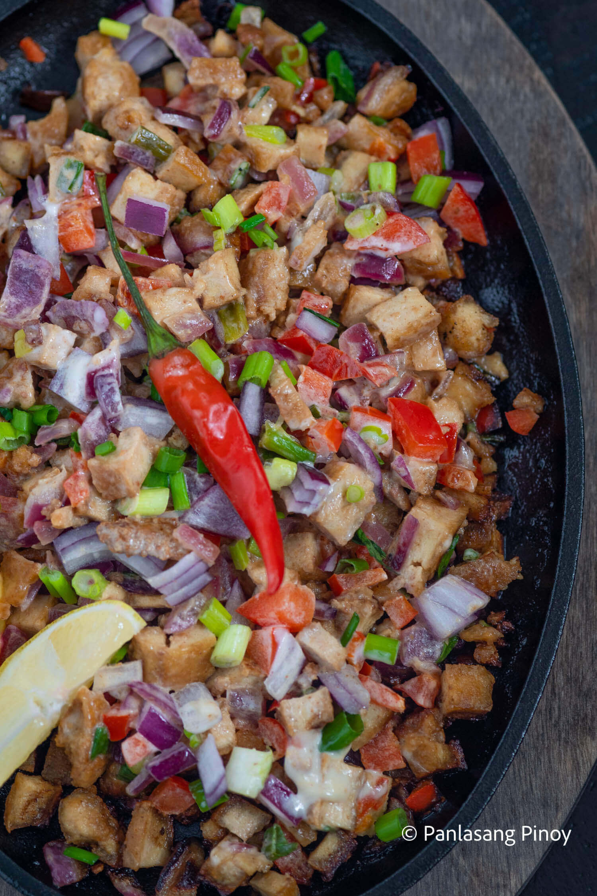

Tofu Sisig Recipe
Home

Description
Everyone loves sisig. Of all the sizzling plate dishes, I would argue that sisig is one of the best. This Kapampangan native makes use of all the pig parts you usually set aside. The result? Something extremely addictive! Sisig has grown in popularity over the years — and across the country, too! An absolute staple at restobars around the country, sisig has earned its spot in the Filipino Food Hall of Fame. But eating all that juicy pork can often come with a price — usually aimed at your health. Thankfully, this sizzling tofu sisig is a crispy, addictive, vegetarian way of enjoying one of your favorite dishes!
Ingredients
- 9 oz firm tofu
- 1 red onion chopped
- 2 tablespoons red bell pepper chopped
- 2 tablespoons liver spread
- ½ cup green onion chopped
- ¼ cup cooking oil
Dressing ingredients:
- ½ cup Lady’s Choice Mayonnaise
- 1 Tablespoon Knorr Liquid Seasoning
- ½ teaspoon onion powder
- 1 teaspoon lemon juice
Steps
- Prepare the tofu. Squeeze the liquid out by pressing against a flat surface. Zip it inside a resealable bag and freeze overnight. Thaw the tofu and press again to remove the remaining liquid.
- Heat the oil in a pan. Fry the tofu until golden brown and crispy. Do the same step on the opposite side. Remove tofu from the pan and let it cool down. Chop into small pieces.
- Make the dressing by combining all the dressing ingredients in a bowl. Mix well. Set aside.
- Saute onion until it softens. Add tofu and liver spread. Cook for 1 minute.
- Add the bell pepper and dressing mixture. Stir until all ingredients are coated. Set aside.
- Heat a metal plate (sizzling plate) and add butter. Transfer the tofu sisig into the metal plate.
- Serve as an appetizer or a main dish. Share and enjoy!